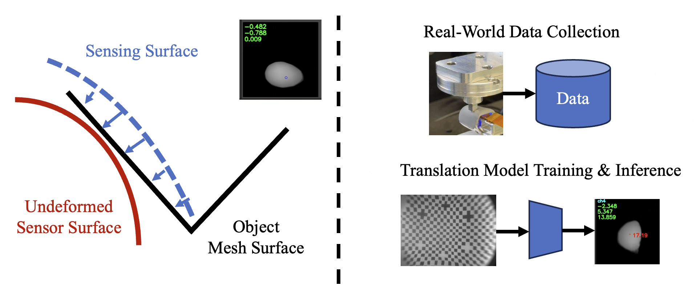
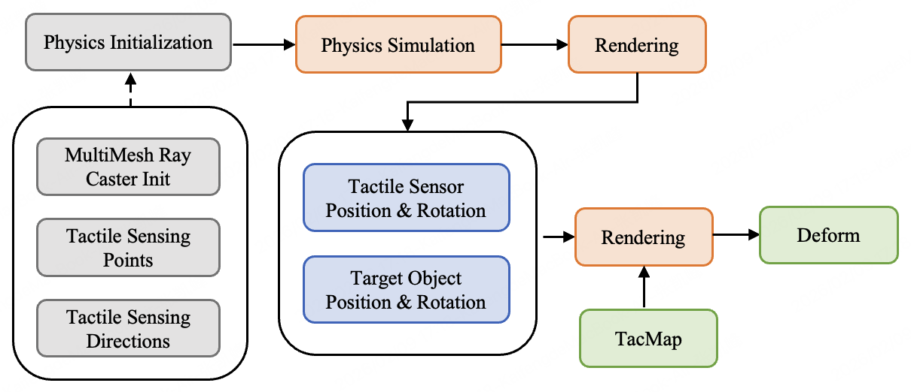
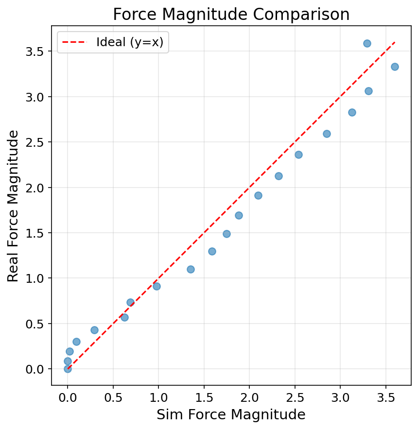
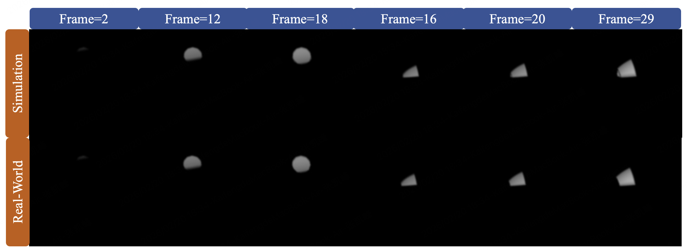
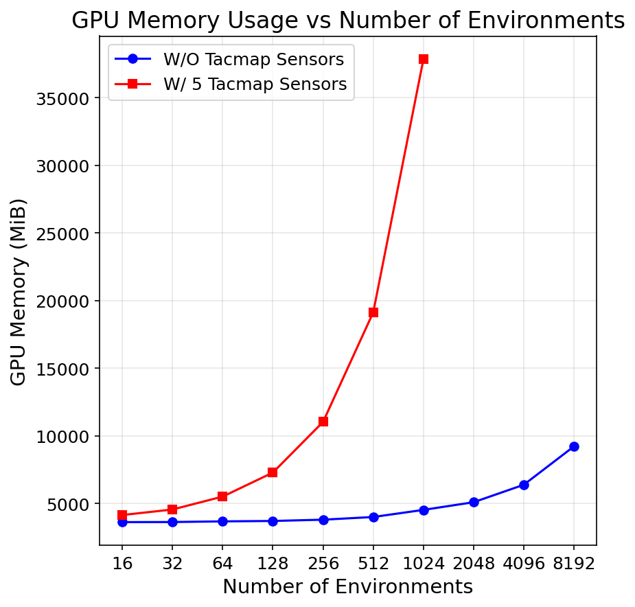

Tacmap: Bridging the Tactile Sim-to-Real Gap via Geometry-Consistent Penetration Depth Map
OpenMOSS/WAM 风格深度精读：Tacmap | 触觉 sim-to-real / deform map 仿真
1. 论文速览
1 一句话贡献；技术定位；核心证据
Tacmap 不是训练一个策略模型，而是提供触觉仿真的共同几何空间。仿真中用 3D intersection volume 生成 penetration depth map，真实中用自动采集装置把 raw tactile image 映射到 ground-truth depth map，让 sim 和 real 都落在 deform map 表示上。
它位于 vision-based tactile sensors、tactile simulation 和 sim-to-real RL 之间。相比简化几何投影，它更物理一致；相比 FEM，它更高效，能服务大规模并行强化学习。
论文通过 force alignment、deform map visualization、rendering efficiency 和 zero-shot in-hand rotation 展示有效性。尤其是策略完全在仿真训练、无真实 fine-tuning 部署到 SharpaWave dexterous hand，是最直接的 sim-to-real 证据。

本文解读：对 Tacmap 而言，这张图需要重点核对 Tacmap 之间的关系。这是一张系统总览图。应顺着箭头确认观测、核心表示、训练目标与执行输出的先后关系，并检查论文的主要创新究竟插入了信息流的哪一段。它支撑的是 Tacmap 的方法结构与模块分工，不直接证明性能提升；性能因果仍需由对应消融和真实任务结果确认。 本图的证据场景限定为：fig:method.。

本文解读：对 Tacmap 而言，这张图需要重点核对 Tacmap 之间的关系。这是一张系统总览图。应顺着箭头确认观测、核心表示、训练目标与执行输出的先后关系，并检查论文的主要创新究竟插入了信息流的哪一段。它支撑的是 Tacmap 的方法结构与模块分工，不直接证明性能提升；性能因果仍需由对应消融和真实任务结果确认。 本图的证据场景限定为：fig:implementation. The implementation framework of our Tacmap in Isaac Lab and MuJoCo。
2. 研究问题与动机
2 核心问题；为什么统一 deform map；为什么适合灵巧手；关键假设
VBTS 能提供高分辨率接触信息，但仿真和真实触觉图像差异很大。简化投影快但不真实，FEM 真实但太慢，不适合 RL 大规模采样。Tacmap 试图在 fidelity 和 efficiency 之间找到可扩展表示。
灵巧手接触密集、状态变化快，RL 需要大量并行环境。如果触觉渲染拖慢 simulation step，就无法训练高质量策略。Tacmap 强调低延迟和 GPU memory 友好，正是为大规模触觉 RL 服务。
3. 相关工作脉络
3 VBTS；tactile simulation；sim-to-real RL
GelSight、DIGIT 等视觉触觉传感器能通过弹性体变形提供丰富几何、力和滑移信息。Tacmap 选择把其中最稳定、最可仿真的几何深度作为公共表示。
传统 tactile simulation 一端是简化投影，速度快但不够物理；另一端是 FEM，真实但算力重。Tacmap 用体积穿透深度作为中间方案。
很多 sim-to-real 方法依赖 domain randomization 或 image translation。Tacmap 的思路是避免对 raw tactile image 做复杂匹配，而是让仿真和真实先投到同一个几何空间。
4. 方法详解
4 仿真 deform map；真实 deform map；引擎实现；计算效率
仿真中 Tacmap 计算物体与触觉表面之间的 3D intersection volume，并把穿透深度投影成 depth map。这个表示直接反映接触几何，避免手工调光学渲染。
论文在 Isaac Lab 和 MuJoCo 中实现 Tacmap，说明该框架不是绑定单一仿真器。实现图展示几何模型、触觉表面和仿真环境如何对接。

本文解读：对 Tacmap 而言，这张图对应一个可单独检查的论文证据。这张对比图应按相同任务和指标逐列读取，而不是只看总体平均。需要区分对手方法、训练数据是否一致，以及提升来自成功率、任务进度还是执行稳定性。图能支持 Tacmap 在所列基线与任务上的相对优势，但没有覆盖的手型、对象或部署条件仍属于外推。 本图的证据场景限定为：fig:net_force.。

本文解读：对 Tacmap 而言，这张图对应一个可单独检查的论文证据。这张图可视化了论文依赖的中间表示。应检查相同语义或相同接触条件下表示是否一致，以及动作、手型或仿真域变化时表示是否仍保留任务相关差异。中间表示看起来合理只是必要条件；它是否真正服务 Tacmap 的控制，还要与策略成功率、规划结果或跨域实验一起判断。 本图的证据场景限定为：fig:visualization.。
5. 实验与结果
5 force alignment；deform map visualization；efficiency；zero-shot in-hand rotation
论文用圆柱和方形压头比较仿真与真实 net force，说明 penetration depth map 与真实传感器测量在整体动力学上高度相关。force alignment 支撑 Tacmap 不只是视觉上相似。
渲染效率实验显示在数千并行环境下仍能维持合理渲染频率，GPU memory 增长可控。这个结果对 RL 很关键，因为触觉高保真不能以牺牲采样效率为代价。

本文解读：对 Tacmap 而言，这张图需要重点核对 Tacmap 之间的关系。这张曲线或柱状图描述资源、数据量或优化预算变化时的趋势。应同时观察收益是否单调、何处出现饱和，以及计算成本是否随收益同步增长。趋势能支持 Tacmap 关于扩展性或效率的判断，但只有被测试的区间有证据，区间外不能直接外推。 本图的证据场景限定为：fig:efficiency.。
6. 复现要点
6 最小复现；数据采集；仿真接入；策略训练
先实现单指 VBTS 的仿真 penetration depth map 和真实 image-to-depth translation，再接一个简单接触控制任务。不要一开始就复现完整多指 in-hand rotation。
需要在 Isaac Lab/MuJoCo 中定义触觉表面、物体几何和 intersection volume 计算。验收时看 force correlation、deform map similarity 和 step frequency。
7. 分析、局限与边界
7 最大价值；证据为何成立；局限；后续方向
Tacmap 最大价值是把触觉 sim-to-real 从 raw image matching 转向几何一致表示。它为触觉强化学习提供可扩展底座。
作者明确提到当前主要关注 normal penetration depth，没有显式建模 tangential force distribution、shear strain 和 micro-slip。这限制了更高级的滑移预测和精细力控。
8. 组会问答准备
Q1 Tacmap 为什么不用 FEM？；真实触觉图像如何对齐仿真？；zero-shot 成功说明什么？；最大局限？；和 SaTA/ViTacFormer 的关系？
FEM 高保真但太慢，不适合大规模 RL；Tacmap 用 penetration depth map 在 fidelity 和 efficiency 之间折中。
说明策略在仿真 deform map 上学到的接触反馈能迁移到真实传感器映射后的 deform map。
Tacmap 的核心问答应围绕表示等价性：仿真侧通过几何相交计算 penetration depth，真实侧通过传感器图像翻译得到同类 deform map。零样本策略迁移成立的前提，是两侧表示在相同接触位置下具有足够一致的力学相关性，而不只是视觉相似。